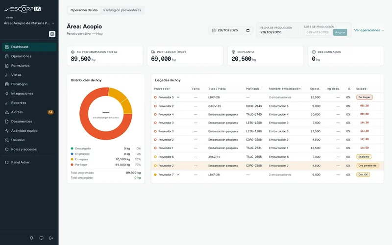
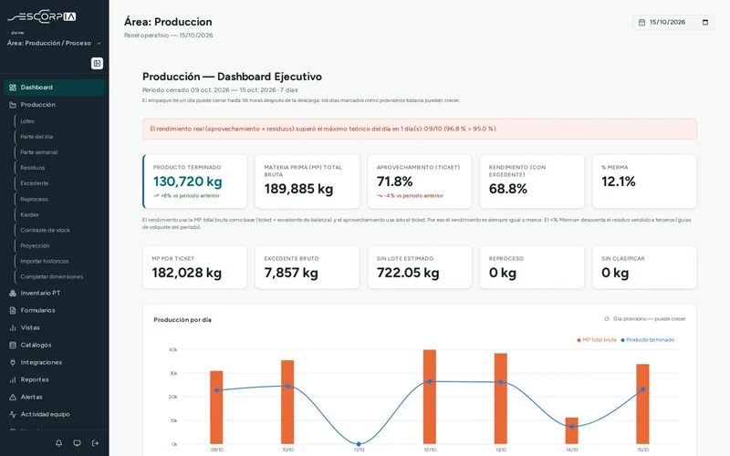
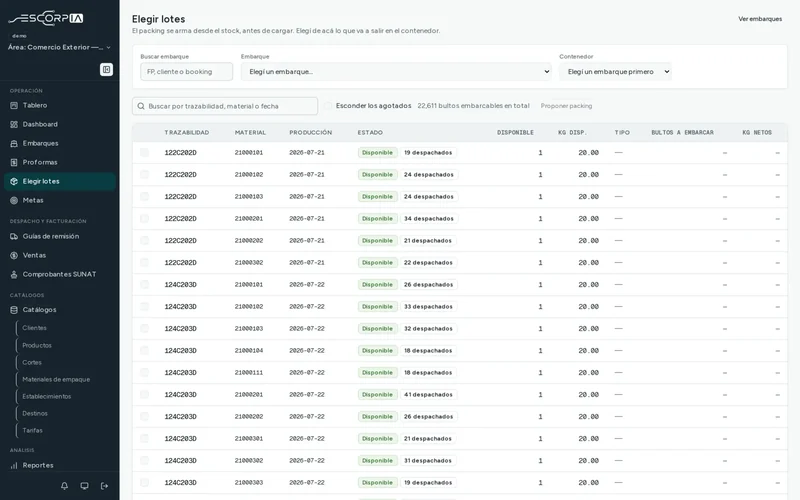
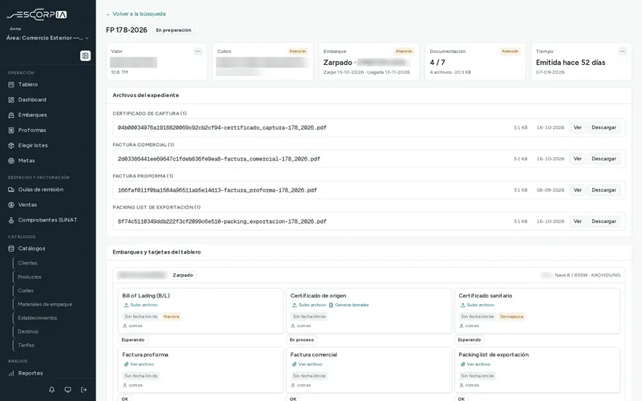

01Plataformas y SaaS · 2024 – hoy
Escorpia Traza: ERP y trazabilidad multi-tenant para agroexportación
Plataforma SaaS que cubre acopio, producción, almacén, comercio exterior y facturación electrónica. Un panel web, una app móvil offline y bots de WhatsApp trabajan sobre el mismo backend.
Cada dato se registra una sola vez y lo ve el área que lo necesita, del muelle al zarpe; toda la infraestructura cuesta ~USD 83/mes.
Ver Escorpia Traza en escorpia.com
Problema → solución → ahorro
Llegadas de materia prima

- Problema
- Las llegadas se avisaban por WhatsApp entre audios y fotos, y los pesos se anotaban en un cuaderno para volver a digitarlos en Excel; los datos se perdían o se duplicaban.
- Solución
- Un bot de WhatsApp registra cada llegada desde texto o audio, la IA extrae los datos de los documentos de acopio y los pesos de balanza se sincronizan con la llegada.
- Ahorro
- Nada se vuelve a digitar al final del turno, y el bot responde en segundos con el dashboard actualizado.
Producción y packing list

- Problema
- La producción se registraba y ordenaba en archivos de Excel pesados, y el packing list se armaba a mano.
- Solución
- Lotes con código de trazabilidad, partes diarios y kardex por lote; el packing list se genera automáticamente eligiendo lotes del stock.
- Ahorro
- Sin Excel pesados: el packing list sale del stock, y las mermas cuadran con el Excel de planta (457 guías importadas sin rechazos).
Almacén y trazabilidad

- Problema
- El stock estaba disperso: mercadería que figuraba como despachada sin haber salido, o al revés.
- Solución
- Stock consolidado con kardex y contraste de stock; la producción y el zarpe se sellan como eventos que no se pueden editar ni borrar.
- Ahorro
- Trazabilidad completa de cada lote, de la recepción al zarpe, sin stock perdido ni salidas sin registrar.
Calidad y cadena de frío

- Problema
- El papeleo de calidad y de la cadena de frío se llevaba a mano, y sus documentos tomaban horas.
- Solución
- Registro de todo el control de calidad y de la cadena de frío; el informe de muestreo se arma desde el teléfono, con fotos, y su PDF sale de los datos.
- Ahorro
- Documentos que llevaban horas se generan desde los datos ya registrados.
Comercio exterior: documentos automáticos

- Problema
- Las proformas vivían en filas de Excel con macros que solo entendía una persona, y el Anexo 01 se copiaba a mano dato por dato.
- Solución
- Proforma, Anexo 01, packing list y borrador de certificado de origen se generan en PDF desde los datos, en un expediente con más de 25 tipos de documentos.
- Ahorro
- Se acaba el copiado manual de documentos; 240 proformas históricas (~USD 49.9M) quedaron cargadas en el sistema.
Notificaciones entre áreas
- Problema
- El estado de cada embarque se consultaba por correo, y cada consulta abría un hilo nuevo.
- Solución
- Al generarse un documento, las áreas correspondientes reciben una notificación al instante, con alertas y dashboards por área.
- Ahorro
- Cada área ve el estado en vivo, sin pedir reportes ni abrir hilos de correo.
Programación de embarques
- Problema
- El seguimiento de fechas y precios de cada embarque dependía de herramientas sueltas.
- Solución
- Programación de embarques con contenedores, B/L, zarpe y checklist de documentos por embarque.
- Ahorro
- Fechas y precios de cada embarque en un solo lugar, con lo que falta visible a primera vista.
Análisis de competidores
- Problema
- No había una forma clara de saber cómo se ubicaba la empresa frente a la competencia.
- Solución
- Análisis de mercado de los competidores a partir de data de aduanas.
- Ahorro
- Decisiones comerciales con datos: la posición frente a la competencia, medida con data de aduanas.
Logros técnicos y stack
- Motor documental con extracción por IA, reglas de validación y semáforo de revisión humana; app móvil offline-first con cola SQLite.
- Comercio exterior completo: proformas, contenedores, propuesta automática de packing, tablero Kanban y carga histórica de 240 proformas (~USD 49.9M).
- Producción con kardex por lote, trazabilidad GS1 y mermas conciliadas con el Excel de planta (457 guías importadas sin rechazos).
- Facturación electrónica SUNAT (facturas, boletas, notas y guías de remisión) mediante un adaptador desacoplado.
- Bots de WhatsApp que registran llegadas y emiten proformas por texto o audio, en producción desde agosto de 2026.
- Gate de despliegue con 13,223 pruebas, observabilidad con Prometheus y Grafana, e infraestructura reducida a ~USD 83/mes.
Stack
- NestJS
- Fastify
- PostgreSQL 17
- Drizzle
- Redis
- BullMQ
- Next.js 16
- React 19
- Expo
- n8n
- Gemini
- Whisper
- Docker
- GitHub Actions
- Prometheus
- Grafana